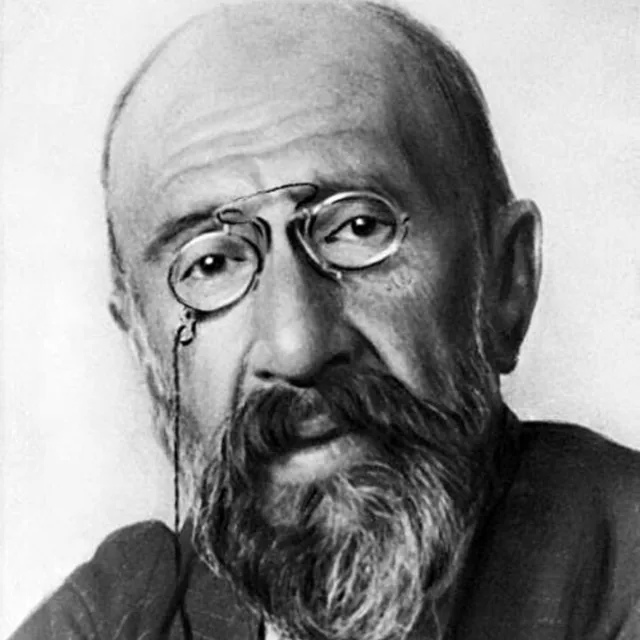

Osman Hamdi Bay, a distinguished royal polymath of the Ottoman Empire, carries the esteemed title of "Bay," reflecting his high status and close ties to the palace and caliph. Known for his cultured demeanor, he frequently engages in conversations with guests in French, Turkish, and English, embodying a diplomatic nature that endears him to those around him. During a notable dinner at Thymbra Farm, he oversees an archaeological dig near Constantinople, blending authority with approachability. Osman expresses gratitude to attendees such as Gizem Faruki, Sidra al-Najjar, and Miray, publicly praising their contributions despite their relative inexperience at the site. The discussion revolves around the dig, where he reveals the potential discovery of a megaron, sharing his ambitions to explore additional rooms and emphasizing the significance of their findings.
However, the atmosphere shifts dramatically when a sudden loud noise startles Osman, transforming him from a sociable host into a figure of intense focus and urgency. He swiftly reaches for a ciphered journal, documenting the unfolding events with rapid strokes, his expression revealing deep concentration as he becomes an observer within the group. While the others engage in exploration, particularly around a peculiar, color-desaturated tree, Osman remains immersed in his writing, hinting at a deeper involvement in their quest, even as he maintains a distance from the immediate activity.
In addition to his role as a patron, Osman is actively engaged in the political landscape of the Empire. He shares a close relationship with Crown Prince Abd-ul Mejid, greeting him with a formal embrace. Tasked with assisting the Crown Prince during the transition of power following the death of the Caliph, Osman invites a group to stay at his house in Constantinople, offering them hospitality and the freedom to attend to personal matters. Amidst this backdrop, he reveals that his journal has been stolen, and he has experienced memory obscuration regarding its contents. Expressing a pressing need to recover the journal to regain access to the vital information within, he delegates the task to the group, enlisting their help in retrieving the journal on behalf of “A Certain Community,” which refers to the Empire's clandestine service.
Osman is also connected to a tome involved in negotiations related to its sale, indicating a role potentially as a scholar or collector of rare texts and magical artifacts. Jean-Zera Mongé sought a buyer for the tome taken from Osman, suggesting its significance and a link to Osman's pursuits. The book’s obscure language implies that Osman may possess scholarly expertise or ties to esoteric knowledge. His influence is evident as Sublime Porte interacts with various entities to assess the tome's value. Osman provides resources and a letter to a Janissaries leader, Ahra “the Wolf,” showcasing his connections and influence as he navigates the political and social turmoil of the city, managing his responsibilities in the wake of the Caliph's death.
Recently, Osman attended the coronation of Abd-ul Mejid at the Hagia Sophia, where Abd-ul Mejid received the Sword of Osman. During the ceremony, he expressed concern for the safety of the gathering, suggesting that attendees retreat to a more private setting for brunch. His diplomatic acumen is further illustrated in his conversation with Jean-Zera Mongé, where he addresses the misconception that the Janissaries still exist, clarifying their destruction and replacement by modern forces. He also recognizes Miray's disguise as "Miray" but allows him to maintain the illusion without confrontation, demonstrating a strategic approach to maintaining order amidst potential unrest.
Osman is an influential figure, known for his ability to command attention without overt force, presenting himself as a gracious host who offers invitations and opportunities that others feel compelled to accept. His keen awareness of social dynamics allows him to make suggestions that are often followed without question. Recently, Osman engaged with Jean-Zera, expressing pleasure at their meeting and confirming the upcoming parade. His communication style is subtle, hinting at his authority without explicit demands, leading Jean-Zera to perceive his invitations as gentle commands. This ability to navigate social situations smoothly positions him as a pivotal character in the unfolding events of the Empire.
Osman Hamdi Bay is also a significant figure associated with the intrigues regarding the Ghost of March and the power struggles involving the Janissaries. He has sent word to Sublime Porte, establishing his role as an authority with a vested interest in the ongoing events, particularly concerning the Ghost's actions and their implications for the city’s stability. During a late-night debrief, Sublime Porte discusses the Ghost of March's recent actions at the Festival of Candles, including the death of Nazif, a perfumist in the service of the Ghost. The Ghost has relieved Nazif of his duties and is attended by individuals dressed in the uniforms of the disbanded Sekban soldiers. Ahra "the Wolf" has summoned Osman Hamdi Bay for Sublime Porte's involvement in the situation at hand. Sublime Porte learns that their next assignment, initially to recover a journal, is now connected to dealing with the "unquiet dead" beneath the ruins of Saint Benoit Church, a task delegated to them by Osman due to his resources being tied up in the aftermath of the Ghost's actions.
Osman is a male human with a scholarly demeanor, often surrounded by ancient texts and artifacts. He is an expert in historical documents, having identified a returned journal as an expertly crafted fake. Osman possesses a cracked cipher that enables him to decipher the journal's contents. He holds a professional interest in archaeological finds related to his heritage and connections to noble families, and he engages with Sublime Porte in a welcoming manner, acknowledging their successful endeavors in the ruins and expressing excitement about their discoveries.
After Sublime Porte's exploration, Osman examines the returned journal and quickly declares it a forgery. He reveals that the Ghost of March has requested a rendezvous in the Undercity to deliver the true journal. Osman is cautious about entering the Undercity alone and suggests that he would prefer Sublime Porte to either escort him or act on his behalf, expressing an understanding of the potential dangers involved and a desire for safety while navigating the complexities of their situation.
Recently, Osman is associated with the newly crowned Padisha and plays a role in the political landscape. He is recognized as a figure who cultivates assets, as Aziz introduced the trio as assets developed by him. Osman has a library that Jean-Zera Mongé visited in search of information regarding the Hippodrome and race-fixing, although he was absent during that visit. During a meeting with the Padisha and the Sultan, Aziz mentioned Osman in the context of political maneuvering, suggesting his involvement in influencing the new ruler's decisions. The Sultan presented a scroll to Sublime Porte, which was linked to Osman’s interests, indicating his involvement in the political machinations of the court.
Osman Hamdi Bey is the Loremaster of the Lodge of Byzantia. He is associated with a manor that features secret compartments and an artifact vault. Osman possesses a journal containing significant information, including the location of the Padishah’s Consort’s sister, a powerful diviner. The journal is locked both mundanely and arcane, and he has indicated that another method exists to access its contents. In a letter to his friends, Osman bequeaths his manor to them and expresses concern about a situation that may escalate in the Golden City, requesting their assistance one last time. The letter includes a Black Queen Chess Piece with a coiled metal serpent, which serves as a key to the location of the consort’s sister. Osman’s last words reference a chess metaphor, emphasizing the importance of succeeding without unnecessary sacrifices.
Osman Hamdi Bey has been affected by a memory-erasing spell cast by Bergüzar. He is involved in a plan concerning Hamit the Quartz of Damascus, where the same spell was intended to erase Hamit's memory of encountering Sublime Porte. Osman's name is mentioned in relation to the memory scroll, indicating a connection to a larger conspiracy involving memory manipulation.
More recently, Osman has been killed, and there are discussions about avenging his killers. He is the owner of letter and journal materials carried by the party. The party passed Osman’s letter and journal materials through the cell bars for a scarlet-dressed woman to examine. She confirmed that Osman had visited her years earlier and, after reading Osman’s journal materials, declared that he had indeed tasked the party with their current pursuit, which involves decrypting Osman’s journal and locating Mira.